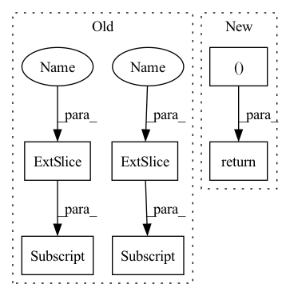

Pattern ID :804
Before Change
// Only pad the lower part of the spectrum.
spec_f = self.pad_spec(spec)
spec_f = self.df_op(spec_f, df_coefs)
spec[..., : self.nb_df, :] = spec_f[..., : self.nb_df, :]
else:
spec = self.df_op(spec, df_coefs)
return spec, m, lsnr, df_coefsAfter Change
else:
spec = self.df_op(spec, df_coefs)
return spec, m, lsnr, df_alpha
In pattern: SUPERPATTERN
Frequency: 5
Non-data size: 6
Instances Fragment ID: 2579493
Project Name: rikorose/deepfilternet
Commit Name: 3e554333e5a3f0802f8df5a00e07de517dfe6561
Time: 2022-10-18
Author: h.schroeter@pm.me
File Name: DeepFilterNet/df/deepfilternet2.py
M Class Name: DfNet
N Class Name: DfNet
M Method Name: forward(4)
N Method Name: forward(4)
M Parent Class: nn.Module
N Parent Class: nn.Module
M File Name: DeepFilterNet/df/deepfilternet2.py
N File Name: DeepFilterNet/df/deepfilternet2.py
M Start Line: 428
M End Line: 455
N Start Line: 486
N End Line: 502
Before Change
// Self-attention
// TODO: 其他模型结构
len_range = torch.from_numpy(np.arange(self.max_his)).to(history.device)
position = (lengths[:, None] - len_range[None, :seq_len]) * valid_his
pos_vectors = self.p_embeddings(position)
his_vectors = his_vectors + pos_vectors
attn_mask = valid_his.view(batch_size, 1, 1, seq_len)
his_vectors = self.transformer(his_vectors, attn_mask)
his_vectors = his_vectors * valid_his[:, :, None] .float()
his_vector = his_vectors.sum(1) / lengths[:, None].float()
// his_vector = his_vectors[torch.arange(batch_size), lengths - 1, :]
After Change
his_vectors = self.i_embeddings(history)
his_vector = self.encoder(his_vectors, lengths, valid_his, t_history, user_min_t)
intent_pred = self.proj(his_vector) // bsz, K
return his_vector, intent_pred
class GRUEncoder(nn.Module):
def __init__(self, emb_size): Fragment ID: 2579492
Project Name: thuwangcy/rechorus
Commit Name: 7c6b4cfaf0b7765452a8e750212a05ddf29aaae7
Time: 2021-08-16
Author: THUwangcy@gmail.com
File Name: src/models/developing/TiMiRec.py
M Class Name: IntentPredictor
N Class Name: IntentPredictor
M Method Name: forward(5)
N Method Name: forward(3)
M Parent Class: nn.Module
N Parent Class: nn.Module
M File Name: src/models/developing/TiMiRec.py
N File Name: src/models/developing/TiMiRec.py
M Start Line: 207
M End Line: 224
N Start Line: 217
N End Line: 222
Before Change
def forward(self, points, features):
features = features.permute(0, 2, 1)
proposals = self.mlp(features)
_, indices = torch.topk(proposals[..., -1:] , k=self.cfg.PROPOSAL.TOPK, dim=1)
indices = indices.expand(-1, -1, proposals.shape[-1])
proposals = proposals.gather(1, indices)
return proposals[..., :-1] , proposals[..., -1]
After Change
proposals = self.mlp(features)
boxes, scores = self.reorganize_proposals(proposals)
scores = F.softmax(scores, dim=-1)
return boxes, scores
Fragment ID: 2579474
Project Name: jhultman/vision3d
Commit Name: 425ffd346953ca0d276fcf912c731a0ce0704a3d
Time: 2020-02-15
Author: 27909223+jhultman@users.noreply.github.com
File Name: pvrcnn/detector/proposal.py
M Class Name: ProposalLayer
N Class Name: ProposalLayer
M Method Name: forward(3)
N Method Name: forward(3)
M Parent Class: nn.Module
N Parent Class: nn.Module
M File Name: pvrcnn/detector/proposal.py
N File Name: pvrcnn/detector/proposal.py
M Start Line: 43
M End Line: 47
N Start Line: 58
N End Line: 61
Before Change
// \end{align}
//
// for $i \in {1, 2, ..., \frac{d}{2}}$
rx = (x * idx_theta2.cos()[:, None, None, :] ) + (neg_half_x * idx_theta2.sin()[:, None, None, :] )
//
return rxAfter Change
x_rope = (x_rope * self.cos_cached[:x.shape[0]]) + (neg_half_x * self.sin_cached[:x.shape[0]])
//
return torch.cat((x_rope, x_pass ), dim=-1)
class RotaryPEMultiHeadAttention(MultiHeadAttention): Fragment ID: 2579488
Project Name: lab-ml/nn
Commit Name: 0ce65adf9e602321109528b05cf99fccb16cd2de
Time: 2022-06-03
Author: vpjayasiri@gmail.com
File Name: labml_nn/transformers/rope/__init__.py
M Class Name: RotaryPositionalEmbeddings
N Class Name: RotaryPositionalEmbeddings
M Method Name: forward(2)
N Method Name: forward(2)
M Parent Class: nn.Module
N Parent Class: nn.Module
M File Name: labml_nn/transformers/rope/__init__.py
N File Name: labml_nn/transformers/rope/__init__.py
M Start Line: 132
M End Line: 163
N Start Line: 171
N End Line: 193
Before Change
// Only pad the lower part of the spectrum.
spec_f = self.pad_spec(spec)
spec_f = self.df_op(spec_f, df_coefs)
spec[..., : self.nb_df, :] = spec_f[..., : self.nb_df, :]
else:
spec = self.df_op(spec, df_coefs)
return spec, m, lsnr, df_coefsAfter Change
else:
spec = self.df_op(spec, df_coefs)
return spec, m, lsnr, df_alpha
Fragment ID: 2579487
Project Name: rikorose/deepfilternet
Commit Name: 3e554333e5a3f0802f8df5a00e07de517dfe6561
Time: 2022-10-18
Author: h.schroeter@pm.me
File Name: DeepFilterNet/df/deepfilternet2.py
M Class Name: DfNet
N Class Name: DfNet
M Method Name: forward(4)
N Method Name: forward(4)
M Parent Class: nn.Module
N Parent Class: nn.Module
M File Name: DeepFilterNet/df/deepfilternet2.py
N File Name: DeepFilterNet/df/deepfilternet2.py
M Start Line: 428
M End Line: 455
N Start Line: 486
N End Line: 502
Before Change
// Dim 1 computations.
pers1_reshaped = pers1.permute(1,0,2).reshape(pers1.shape[1],-1)
pers1_mask = ~((pers1_reshaped==0).all(-1))
nodes_idx_dim1 = edge_index[:,pers1_mask]
x0_dim1 = torch.cat(
[ x[nodes_idx_dim1[0,:],:] , x[nodes_idx_dim1[1,:],:] , pers1_reshaped[pers1_mask] ], 1)
x_dim1 = self.dim1_fn(x0_dim1, edge_slices, mask = pers1_mask)
else:
x_dim1 = NoneAfter Change
else:
x0 = self.out(torch.cat([x, x0], dim=-1))
return x0, x1
Fragment ID: 2579470
Project Name: borgwardtlab/togl
Commit Name: f6de25e187c5a78974edd07cec7fc20c675bbbc6
Time: 2021-02-02
Author: max.horn@bsse.ethz.ch
File Name: topognn/layers.py
M Class Name: SimpleSetTopoLayer
N Class Name: SimpleSetTopoLayer
M Method Name: forward(3)
N Method Name: forward(3)
M Parent Class: nn.Module
N Parent Class: nn.Module
M File Name: topognn/layers.py
N File Name: topognn/layers.py
M Start Line: 222
M End Line: 261
N Start Line: 238
N End Line: 270